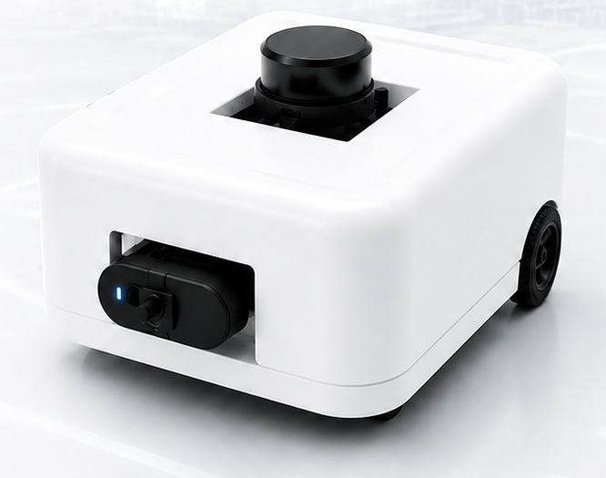

삐용
실내를 자율 순찰하며 화재와 연기를 감지하는 로봇
차체와 전원 설계
센서, 연산 장치, 전원 부품을 나눠 장착할 수 있도록 3단 차체를 설계했습니다. 무납땜 전원 배선과 ESP32의 바퀴 속도 제어 펌웨어도 맡았습니다.

주행이 끊긴 이유
바퀴 움직임을 추정하는 /odom의 발행 빈도가 9.9Hz까지 떨어졌습니다. 같은 컴퓨터에서 실행한 라이다 데이터와 비교해, 열화상 센서를 읽는 코드가 ESP32의 속도 제어 루프를 막고 있음을 확인했습니다.
측정 결과
카메라 노드의 인코딩 경로를 바꿔 CPU 사용률을 줄였습니다. 영상은 640×480에서 1080p 30fps로 올렸습니다.
- 카메라 노드 CPU 사용률
- 113.95% → 26.38%